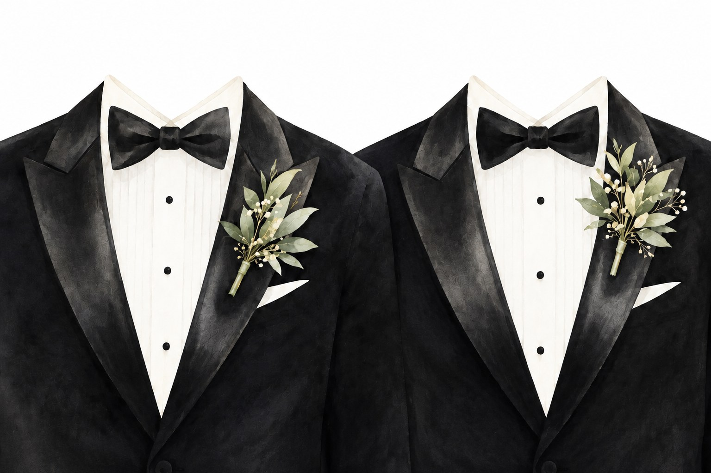

BRÖLLOPSINBJUDAN
ARGYRIOS KEREZIS&TOMISLAV POSAVAC
Vi bjuder in dig att fira vårt bröllop
Datum: 19 juni 2027
Tid: meddelas senare
SWEDENBORGS LUSTHUS
SKANSEN
Visa denna inbjudan i Skansens entré.
Förhandsversion · invänta bekräftad vigseltid innan kortet används.
